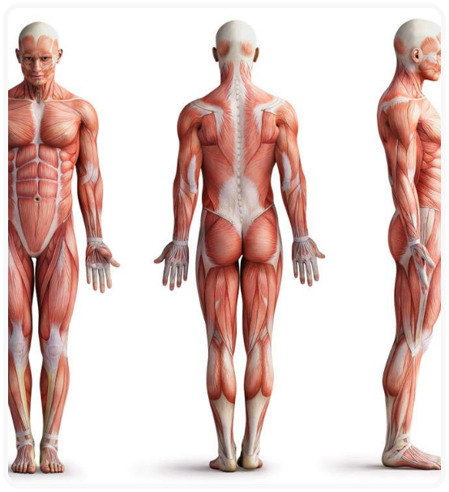

MUSCULAR
O sistema muscular é composto pelos diversos músculos do corpo humano. Principais funções: Estabilidade corporal; Produção de movimentos; Aquecimento do corpo (manutenção da temperatura corporal); Preenchimento do corpo (sustentação); Auxílio nos fluxos sanguíneos.
